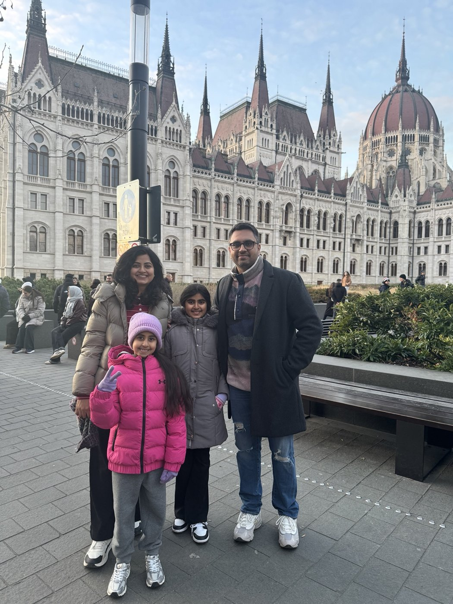
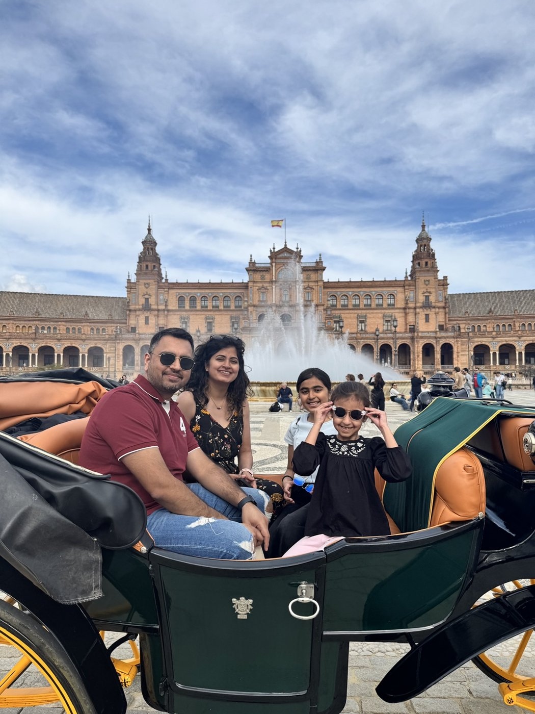
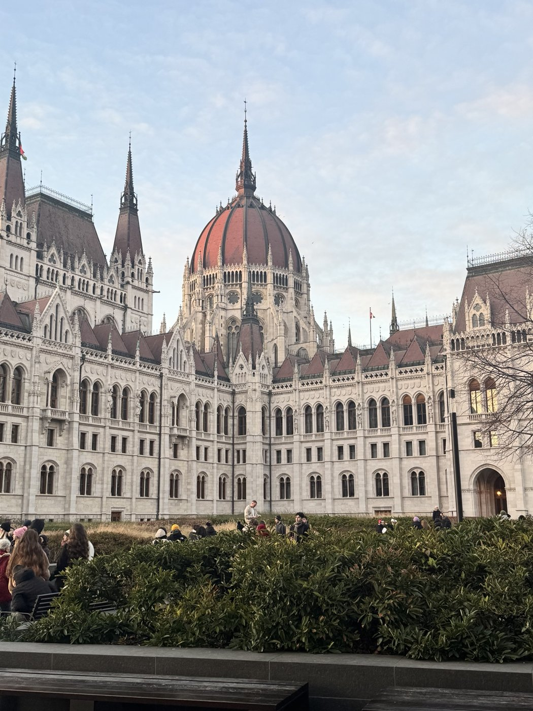

Tromsø
Northern lights, Arctic winter and four nights above the Arctic Circle.
BATRAMAN / TRAVEL DIARY
Family trips, memorable days out and places worth returning to. Here are a few photos from the journey; the longer diary entries are on their way.
Family time in Budapest, a carriage ride in Seville and a dolphin experience in Portugal. A few favourite photos while I put the longer diary entries together.

Family time in front of the Hungarian Parliament.

A family moment from Seville.

A moment from the dolphin experience.

The Hungarian Parliament, from another perspective.
I’m putting together practical notes on itineraries, family travel, food and the details that make a trip memorable. These destinations are a preview of what’s to come.
Northern lights, Arctic winter and four nights above the Arctic Circle.
A compact anniversary escape: old streets, great food and one very good night away.
Lisbon and beyond — a family itinerary built around food, fun and New Year.
Trains, mountains and the kind of scenery that makes the journey the destination.